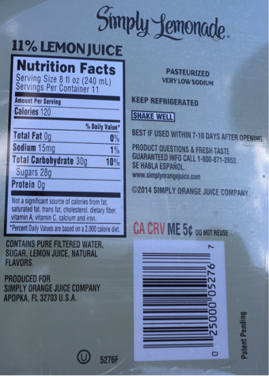
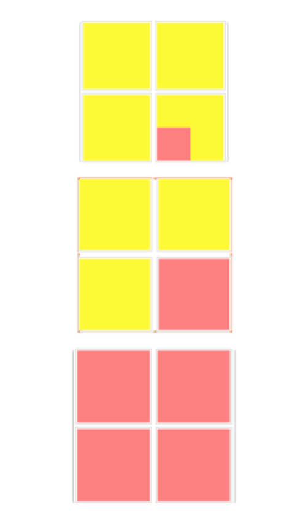
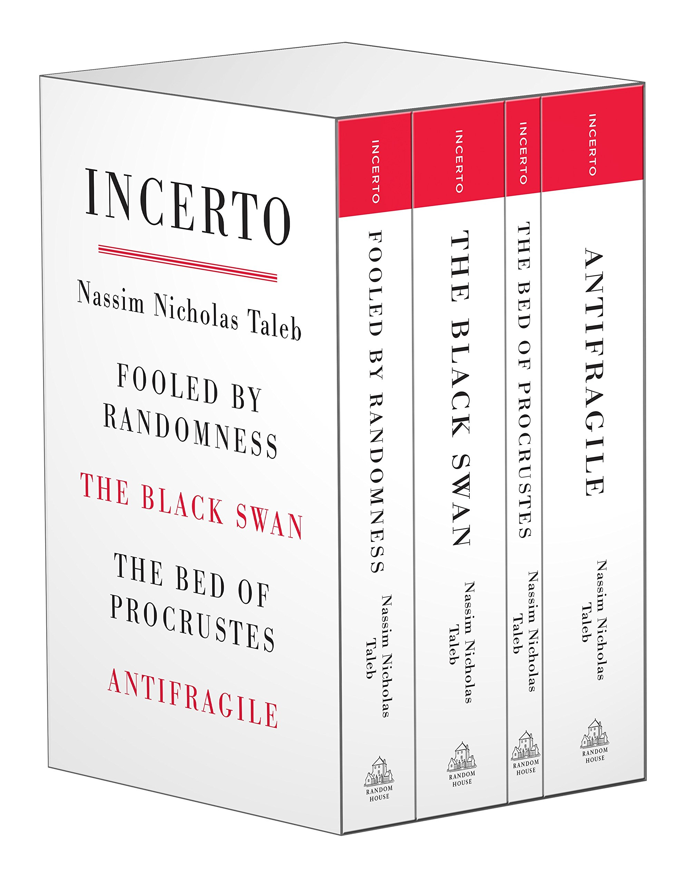

多数服从少数｜Minority Rule

摇摆仓
很多人认为政治选举是少数服从多数的常见范例，但根据法国物理学家Serge Galam，选举的结果恰恰是由少部分人的意见决定的。他的研究发现，一些少数派的意见一旦超过一个区间，会完全会影响选举结果。
在关于选举的研究中，很多人认为10%的极右或极左选民的投票理应会带来相对应10%的选票。其实，这些10%的选票应该被划为“固定票仓”，因为他们只会为自己支持的政党投票。
事实上，那些“摇摆的选票”才是真正起作用的，他们有可能给已经拥有“固定票仓”的某一方政党带来大量选票，也就是说，中间的“摇摆选票” 可能会被左右两派的极端观点影响，从而成为决定性选票。
这可能有悖很多人的常识，但真实世界也确实如Serge Galam预测那样发生。
饮料上的清真标识

之前注意到很多食品包装上都有清真标识，后来在国外也发现几乎所有的饮料上都有U型标志，这表示符合Kosher food (犹太洁食) 标准。

考虑到伊斯兰教或犹太人的人口占比很少，是什么原因使大多数饮品包装都印有专门标识呢？
我在Nassim Tabel 的《skin in the game》里找到了答案，他提出的少数人原则 (Minority Rule) ，在某些情况下，“顽固的” 少数人的偏好可以凌驾于大多数人之上。
对花生过敏的人不能接触任何与花生相关的食物，为了防止有人误食花生产生意外，美国公立学校实行了“禁花生令” —— 不能在学校分发花生或与之接触过的食物。此举没有遭到其他学生的反对，因为对花生不过敏的学生也完全可以享用不含花生的食物，这项禁令对他们来说影响不大。
（“禁花生令”遭到很多科学界的反对，认为减少或者禁止接触花生会加重过敏人群的数量。）

Renormalization group
当二手烟有害健康的观念普及后，不能闻烟味的“顽固派” 会要求周围吸烟者停止吸烟或离场。这对吸烟者来说，改变的成本不大，只是换一个场地。
正是因为这些“顽固派” 的坚持，促使了现在大多数场合都禁止吸烟的规定。
当采纳 “顽固派” 的偏好不需要特别高成本时，这时少数派的偏好往往会成为整个群体的偏好，这也解释了我们不会介意饮料上多一个清真或是犹太洁食的标识，况且这样还能帮商家节省一笔分别生产，包装，营销的成本。
平均分布
少数派的分布也会影响到整体的偏好，只有当少数派平均分布在各个地区，才有可能影响到整体的选择。
小时候我生活的城市有条主街，贯穿城区东西两向。以偌大的十字口为分界，东街是人头攒动的商业中心，布满了高档商场，百货大楼。
路口往西，我们俗称“西街”， 也就是回民街，宽阔的道路两侧清一色开满了回民餐馆，有专门宴请宾客的大饭店，也有一间门面的苍蝇小馆。无论大小，餐馆招牌大多是绿底白字的双语标识，在这儿你能吃到最地道的清真美食。
尽管西街每一家都是回民餐厅，但多走出一个路口，周边也多变成了汉民餐馆。
回民街是少数民族聚集的社区，他们没有熙熙攘攘地分布在城市其他街区，因此他们的生活习惯和餐馆的影响范围也受到地域的局限。
遭遇强反弹
在英国，尽管只有3%-4%的穆斯林人口，但市场上清真肉类的比例却很高，约有10%的赛百味连锁餐厅只提供清真食物。
但在英国和其他基督教徒为主的国家，清真肉类却很难成为主流，因为会受到本地基督教徒的宗教排他性影响，基督教徒出于信仰原因不会食用清真肉类。所以，少数人原则在此不适用。
少数人原则 (Minority Rule) 在满足下列三项条件下适用：
1.顽固偏好的接纳对他人来说成本不高。
2.少数群体需要均质地分布在不同地区，才能影响整体的选择。
3.少数派的偏好不会受到强冲击。

少数派原则是 Nassim Taleb 提出的关于现实生活中“非对称性”原则之一，如果感兴趣可以去读他的 Incerto 系列，我觉得像这样的好作品值得细读，值得反复读。
公众号[Della在路上]

欢迎打赏
BOX: 0x21A7eE2E71C61C9311CfF6b11Be6d00E4BdaAD6E
BTC: 17WAegmR9wyAvAnjnYWx41LmPQbPvZeyTi
BOX 定投践行群 - 长期主义者的乐园 - 心理建设 - 逻辑思维 - 编程 - 投资践行
Mixin Messenger: 践行群ID 7000102069
邀请码 CH5XS4Z6